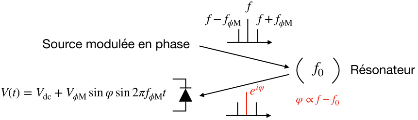
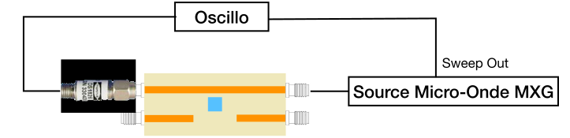
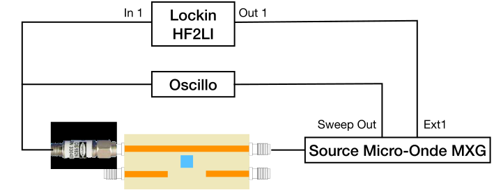

Section 2 Montage Pound-Drever-Hall
Le montage de Pound-Drever-Hall est surtout utilisé en optique pour asservir un laser sur une cavité. Il peut être adapté au régime micro-onde avec une source et un résonateur. A la résonance, l’intensité su signal transmis ou réfléchi par le résonateur passe par un maximum ou un minimum avec une dérivée nulle. La méthode développée par Pound, Drever et Hall permet d’obtenir un signal d’erreur qui passe par zéro lorsque la fréquence de la source traverse la fréquence de résonance de la cavité. La page Wikipedia explique en détail la technique. La méthode est utilisée le plus souvent en réflexion mais fonctionne également en transmission.

Pour obtenir un signal d’erreur, la source est modulé en phase à une fréquence \(f_{\phi\text{M}}\text{.}\) Le signal arrivant sur la résonateur contient trois fréquences: une porteuse à \(f\) et deux bandes latérales à \(f \pm f_{\phi\text{M}}\text{.}\) En notation complexe, l’amplitude émise par la source incidente sur le résonateur s’écrit:
\begin{gather*}
A^{\text{in}} = A_0 e^{2i\pi f t} (1 + \epsilon \, e^{2i\pi f_{\phi\text{M}} t} - \epsilon \, e^{2i\pi f_{\phi\text{M}} t} )
\end{gather*}
Notez bien la présence du signe moins entre les amplitudes des deux bandes latérales. Le signal est réfléchi par le résonateur, que l’on suppose sans perte. Le coefficient de reflexion est de module unité et les trois composantes subissent juste un déphasage à la réflexion. Supposons que \(f_{\phi\text{M}} \gg \kappa\text{,}\) les bandes latérales ne sont alors pas affectées par le résonateur et ne sont donc pas déphasées. L’amplitude réfléchie est
\begin{gather*}
A^{\text{ref}} = A_0 e^{2i\pi f t} (e^{i \phi} + \epsilon \, e^{2i\pi f_{\phi\text{M}} t} - \epsilon \, e^{2i\pi f_{\phi\text{M}} t} )
\end{gather*}
Au premier ordre en \(\epsilon\text{,}\) la puissance réfléchie est
\begin{gather*}
P^{\text{ref}} = \frac{1}{2} (1+4 \epsilon \sin \phi \sin 2\pi f_{\phi\text{M}} t)
\end{gather*}
On voit donc que la phase \(\phi\text{,}\) qui passe par zéro à la résonance, peut être mesurée en démodulant la tension en sortie de la diode à la fréquence \(f_{\phi\text{M}}\text{.}\) Le signe moins entre bandes latérales permet d’obtenir \(\sin \phi\) (et non \(\cos \phi\)).
Sous-section 2.1 Schéma du montage

-
Réalisez le montage ci-dessus, l’élément à gauche est la diode permettant de détecter la puissance du signal micro-onde. La tension en sortie est proportionelle à la puissance micro-onde en entrée. Il ne faut pas dépasser 0 dBm en entrée et la zone de fonctionnement linéaire se situe en dessous de -10 dBm.
-
Programmez un sweep en fréquence sur la source micro-onde et observez la résonance en mesurant la tension à la sortie de la diode. Vous devez obtenir un pic de tension, comparable à la mesure obtenue en module avec le VNA.
Pour obtenir un signal d’erreur, il faut moduler en phase la source et démoduler le signal en sortie de la diode de détection. Pour cela, on utilise une détection synchrone (lockin), ici un HF2LI de Zürich Instruments.

-
Modifiez le montage comme ci-dessus pour brancher la modulation du lockin à \(f_{\phi\text{M}}\) sur l’entrée externe de la source micro-onde et la sortie de la diode sur l’entrée de mesure du lockin.
-
Programmez la source micro-onde pour obtenir une modulation en phase pilotée par l’entrée externe. Utilisez le mode \(\phi\text{M}\) High Bandwidth et mettre l’amplitude de modulation de phase au maximum.
Sous-section 2.2 Réglage du lockin
L’interface de contrôle du lockin est accessible ici.
-
Programmez le lockin pour effectuer une mesure à \(f_{\phi\text{M}}\) de l’ordre de quelques MHz (typiquement 2 MHz), utilisez une amplitude de modulation de 1 Vpp maximum.
-
Réglez la démodulation jusqu’à observer un signal d’erreur lorsque la source effectue un sweep en fréquence.
-
Programmez le lockin pour envoyer le résultat de la démodulation sur la voie auxiliaire 1 afin de pouvoir l’observer sur l’oscillo.
-
Optimisez les paramètres, fréquence, déphasage, amplitude de modulation, position du KTO... pour maximiser l’amplitude du signal d’erreur.
-
Sauvez quelques traces d’oscillo montrant les différents signaux en fonction de la rampe de fréquence.
-
Estimez la sensibilité de la mesure de la fréquence de résonance